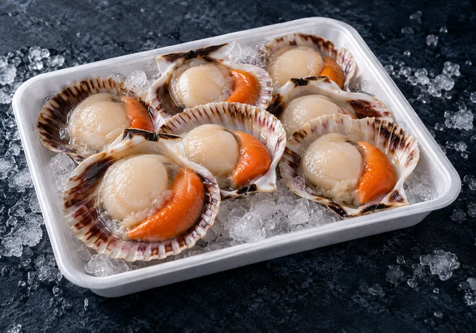
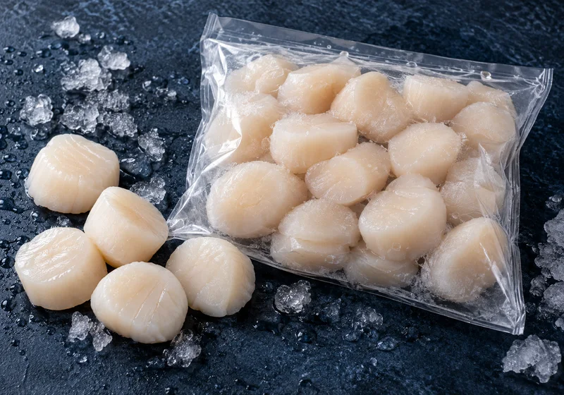
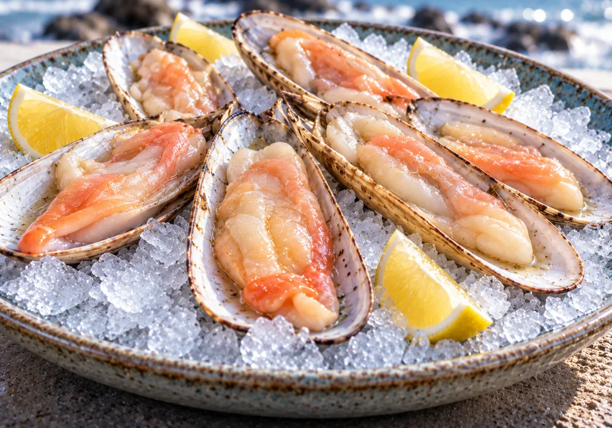

MariscosBandeja aprox. 250 g · 10 unidades
Ostión con coral en media concha
Ostiones en su media concha, listos para gratinar o preparar al horno.
Mariscos
Ostiones en media concha, carne de ostión sin coral y machas grandes para gratinar o preparar a la parmesana. Mariscos congelados listos para la mesa del fin de semana, con despacho en Providencia, Ñuñoa y Las Condes.
Precios finales por formato. Despacho $3.500, gratis desde $50.000 en productos.

MariscosBandeja aprox. 250 g · 10 unidades
Ostiones en su media concha, listos para gratinar o preparar al horno.

MariscosCalibre 20/40 · Bolsa 1 kg
Carne de ostión limpia y lista para saltear, gratinar o incorporar a pastas.

MariscosBandeja 12 unidades
Machas grandes en su media concha, para gratinar o a la parmesana.
Consejos
Los ostiones y machas en media concha son el clásico para una entrada especial. La carne de ostión sin coral rinde para platos de fondo.
Preguntas frecuentes
La bandeja de ostión con coral en media concha trae 10 unidades (aprox. 250 g) y la de machas grandes trae 12 unidades.
Es carne de ostión limpia, sin el coral anaranjado, con un calibre de entre 20 y 40 unidades por libra (aprox. 454 g). Viene en bolsa de 1 kg.
Sí. Los ostiones y machas en media concha se pueden llevar directo al horno, alargando unos minutos el tiempo de gratinado.
Despachamos en Providencia, Ñuñoa y Las Condes, con entrega referencial en 24 a 48 horas, sujeta a disponibilidad y coordinación previa.